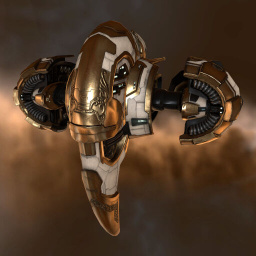

Magnate

Тип корабля: Фрегат
Государство/Организация: Amarr
Примерная стоимость: 554.000 ISK
Описание
При разработке дизайна фрегата типа «Магнат» декоративным элементам уделялось большое внимание — или даже рекордное при сравнении с другими кораблями Амаррской Империи. Считается, что в течение более десятка лет он был частным проектом маленькой группы лучших королевских инженеров. За последнее десятилетие дизайн корабля прошел через несколько этапов. Каждые несколько лет выпускается новая модель «Магната». Последние из этих моделей — «Серебряный Магнат» и «Золотой Магнат» — были представлены публике как призы в амаррских Состязаниях, прошедших в 105 году по юлайскому летоисчислению; первоначальный дизайн «Магната» весьма популярен среди амаррских пилотов.
Характеристики
Корпус
Запас прочности корпуса: 250 ед.
Вместимость грузового отсека: 400 м^3
Объем отсека для дронов: 40 м^3
Пропускная способность канала телеуправления: 15 Мбит/с
Масса: 1.072.000 кг
Занимает объем: 22.100,0 м^3 (2.500,0 м^3 в разобранном виде)
Влияние инертности конструкции: 3,8x
Сопротивление корпуса ЭМ-урону: 33 %
Сопротивление корпуса термальному урону: 33 %
Сопротивление корпуса кинетическому урону: 33 %
Сопротивление корпуса фугасному урону: 33 %
Броня
Запас прочности брони: 350 ед.
Сопротивление брони ЭМ-урону: 50 %
Сопротивление брони термальному урону: 35 %
Сопротивление брони кинетическому урону: 25 %
Сопротивление брони фугасному урону: 20 %
Щит
Запас прочности щита: 250 ед.
Влияние на время регенерации щитов: 10 минут и 25 секунд
Сопротивление щита ЭМ-урону: 0 %
Сопротивление щита термальному урону: 20 %
Сопротивление щита кинетическому урону: 40 %
Сопротивление щита фугасному урону: 50 %
Сопротивление средствам РЭП
Сопротивление накопителя нейтрализирующему воздействию: 0 %
Сопротивление воздействию генератору стазис-поля: 0 %
Сопротивление воздействию помех на наводку вооружения: 0 %
Накопитель энергии
Емкость накопителя: 325,0 ГДж
Время востановления заряда: 180 с
Целеуказания
Максимальная дальность захвата цели: 34 км
Максимальное количество захваченных целей: 4
Радиус сигнатуры: 39 м
Разрешающая способность систем захвата цели: 445 мм
Эффективность радарной системы: 10 ед.
Эффективность магнитнометрической системы: -
Эффективность гравиметрической системы: -
Эффективность ладарной системы: -
Двигательная установка
Максимальная скорость: 350 м/с
Скорость в варп-режиме: 5,0 а.е./с.
Служба оснащения
Мощность ЦПУ: 230,0 Тф
Мощность реактора: 26 МВт
Калибровка: 400 ед.
Точки монтажа орудийных установок: 2
Точки монтажа пусковых установок: 2
Разъемы большой мощности: 3
Разъемы средней мощности: 3
Разъемы малой мощности: 4
Разъемы под установку тюнинг-модулей: 3